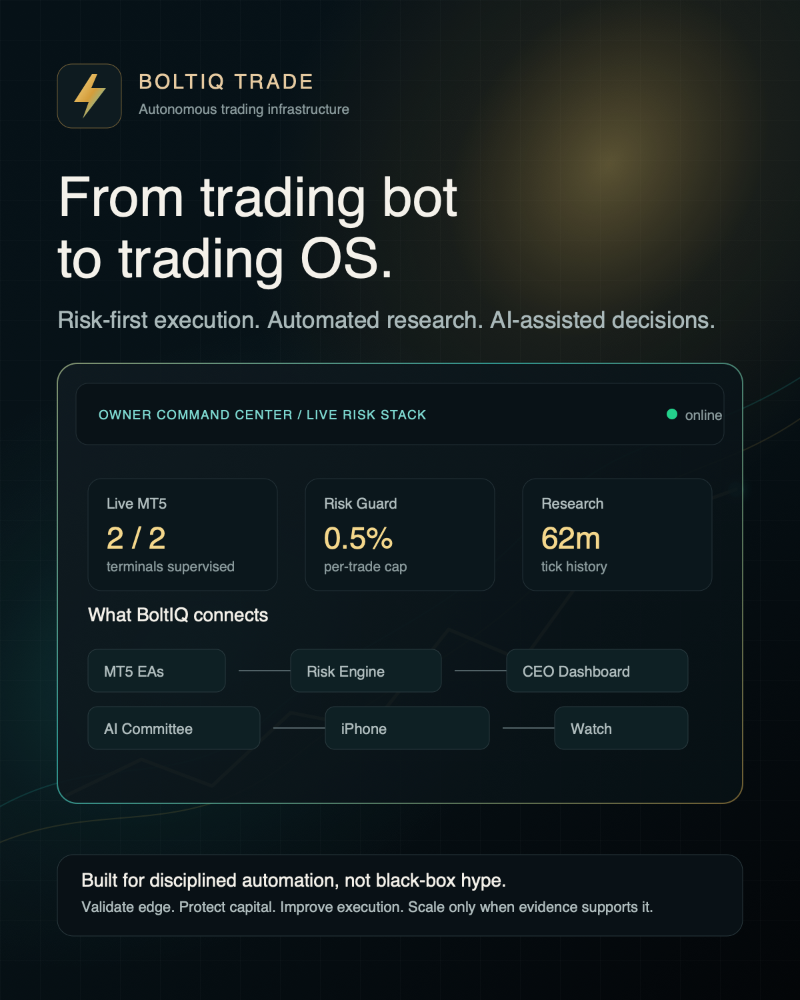

MT5 supervision
Tracks terminal health, account connectivity, trade permissions, live exports, EA decisions, spread, ATR, sessions, and blockers.
An autonomous trading operating system for MT5 execution, prop-firm risk controls, automated strategy research, AI-assisted decisions, and owner-level monitoring.

Designed to validate edge, supervise live systems, and avoid scaling until evidence supports it.
Execution, research, risk, mobile monitoring, and owner decisions are connected into a single operating layer.
Tracks terminal health, account connectivity, trade permissions, live exports, EA decisions, spread, ATR, sessions, and blockers.
Daily drawdown, total exposure, risk per trade, portfolio caps, emergency mode, safe mode, and audit trails stay visible.
Transforms telemetry into CIO, CRO, quant research, execution, operations, and compliance calls for the owner.
Runs backtests, optimizer cycles, sensitivity matrices, progressive validation, and gate-based candidate promotion.
Live dashboard access from iPhone and Apple Watch with cellular fallback, command controls, and low-noise alerts.
Commands, recommendations, deployments, backups, validation results, and risk posture are kept auditable.
BoltIQ connects the EA layer, account telemetry, risk governor, research engine, AI copilot, dashboard, mobile bridge, and notification layer.
The system is designed to improve through evidence, not blind risk increases or forced trading.
The goal is not to hide trading inside a black box. The owner should see what is running, why trading is blocked, what research is testing, and what actions are safe to take.
BoltIQ Trade is currently founder-operated and product-led. For collaborations, technical discussions, media, or strategic opportunities, contact the founder directly.